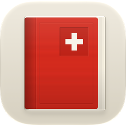

Das Bundesrecht von Fedlex, schön zu lesen: BV, OR, ZGB und alle anderen Erlasse.
Gratis, ohne Werbung, ohne Tracking, für iPhone und iPad. Die Bundesverfassung, das Obligationenrecht, das Zivilgesetzbuch und jeder andere geltende Erlass des Bundes, direkt von Fedlex und so gesetzt, dass man gern darin liest.
Die Texte stammen von fedlex.admin.ch. Dies ist keine amtliche Veröffentlichung; massgebend ist allein die Veröffentlichung durch die Bundeskanzlei. Die App ist kein Angebot des Bundes.
Gratuite, sans publicité ni pistage, pour iPhone et iPad. La Constitution fédérale, le Code des obligations, le Code civil et tous les autres actes fédéraux en vigueur, directement depuis Fedlex et composés pour qu'on ait plaisir à les lire. Chaque article indique depuis quand il est en vigueur ; deux versions se comparent mot à mot, et l'allemand, le français et l'italien côte à côte. La Constitution est incluse hors ligne, le reste peut être enregistré.
Les textes proviennent de fedlex.admin.ch. Ceci n'est pas une publication officielle ; seule la publication opérée par la Chancellerie fédérale fait foi. L'app n'est pas une offre de la Confédération.
Gratuita, senza pubblicità né tracciamento, per iPhone e iPad. La Costituzione federale, il Codice delle obbligazioni, il Codice civile e tutti gli altri atti federali in vigore, direttamente da Fedlex e composti in modo che sia un piacere leggerli. Ogni articolo indica da quando è in vigore; due versioni si confrontano parola per parola, e tedesco, francese e italiano uno accanto all'altro. La Costituzione è inclusa offline, il resto si può salvare.
I testi provengono da fedlex.admin.ch. Non è una pubblicazione ufficiale; fa unicamente fede la pubblicazione della Cancelleria federale. L'app non è un'offerta della Confederazione.
Free, no ads, no tracking, for iPhone and iPad. The Federal Constitution, the Code of Obligations, the Civil Code and every other federal act in force, straight from Fedlex and set so that reading it is a pleasure. Every article shows since when it has been in force; compare two versions word by word, or German, French and Italian side by side. The Constitution is included offline, anything else can be saved.
The texts come from fedlex.admin.ch. This is not an official publication; only the publication by the Federal Chancellery is authoritative. The app is not an offer of the Swiss Confederation.